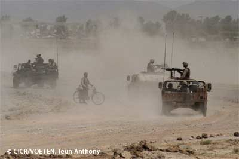

PARTICIPATION DIRECTE AUX HOSTILITES DANS LES CONFLITS ARMES INTERNATIONAUX

Toute personne qui n’est ni un membre des forces armées d’une partie au conflit ni un participant à une levée en masse est une personne civile. Elle a droit à la protection contre les attaques directes.
MAIS si elle participe directement aux hostilités, elle perd sa protection pendant la durée de cette participation.
 LA PARTICIPATION DIRECTE AUX HOSTILITES :
LA PARTICIPATION DIRECTE AUX HOSTILITES :
Un acte spécifique doit remplir trois critères cumulatifs pour être considéré comme une participation directe aux hostilités :
1) Un certain seuil de nuisance :
Acte susceptible de nuire aux opérations militaires ou à la capacité militaire d’une partie à un conflit armé, ou acte de nature à causer des pertes en vies humaines, des blessures et des destructions à des personnes ou à des biens protégés.
Exemples :
le fait d’accomplir des actes de sabotage, le fait de capturer le personnel et les biens militaires, le fait d’enlever des mines mises en place par l’adversaire.
2) Causation directe :
Il doit exister une relation directe de causalité entre l’acte et les effets nuisibles susceptibles de résulter de cet acte. Il y a donc une différence entre la participation directe aux hostilités et les activités faisant partie de l’effort de guerre général (ex : mise au point d’armes) ou pouvant être qualifiées d’activités en soutien à la guerre (propagande politique). La distinction entre participation directe et participation indirecte aux hostilités doit être interprétée comme correspondant à la distinction entre le fait de causer directement ou de causer indirectement des effets nuisibles.
Exemples :
L’acheminement, à bord d’un camion conduit par un civil, de munitions jusqu’à une position de tir active est un acte de participation directe aux hostilités. Par contre, le fait de transporter des munitions entre l’usine et le port où elles seront embarquées pour rejoindre un entrepôt dans une zone de conflit est trop éloigné de l’utilisation de ces munitions dans des opérations militaires spécifiques pour être considéré comme étant la cause directe des effets nuisibles qui en résultent.
3) Lien de belligérance :
L’acte doit être spécifiquement destiné à causer directement des effets nuisibles atteignant le seuil requis, à l’avantage d’une partie au conflit et au détriment d’une autre.
Exemples :
blesser un militaire pour affaiblir la partie à laquelle il appartient et non pour des raisons de légitime défense.
| Sources |
- Premier Protocole additionnel aux Conventions de Genève, 1977 – article 51
-
Droit international coutumier - règle n° 1 (étude du CICR)
-
Guide interprétatif sur la notion de participation directe aux hostilités en droit international humanitaire (CICR – 2009)
Conséquence pour un civil qui fait face aux hostilités :

Un civil participe aux hostilités

Il perd sa protection durant la durée de cette participation

Il devient une cible légitime

Si un civil ne participe pas ou plus aux hostilités

Il est protégé contre les effets des hostilités

Il ne peut pas être ciblé

S’il est directement attaqué, l’attaque pourrait être constitutive de crime de guerre
 LA PROTECTION DES CIVILS QUI NE PARTICIPENT PAS OU PLUS AUX HOSTILITES :
LA PROTECTION DES CIVILS QUI NE PARTICIPENT PAS OU PLUS AUX HOSTILITES :
1) Protection générale :
- les garanties fondamentales : les garanties fondamentales sont considérées comme les protections minimales qui doivent s’appliquer à tout individu, à défaut d’autres protections plus favorables. Ces dispositions visent à protéger toute personne contre toute atteinte à son intégrité physique et à sa dignité (torture, violences sexuelles, meurtres…)
- les secours : si la population civile d'un territoire d'une Partie au conflit est insuffisamment approvisionnée, des actions de secours de caractère humanitaire et impartial et conduites sans aucune distinction de caractère défavorable seront entreprises, sous réserve de l'agrément des Parties concernées.
- le regroupement familial : toute personne civile doit être en mesure de donner et de recevoir des nouvelles de caractère strictement familial aux membres de sa famille. Chaque Partie au conflit doit par ailleurs faciliter les recherches entreprises par les personnes de familles dispersées pour reprendre contact les unes avec les autres et si possible les réunir.
- l’accès aux CICR et autres organisations humanitaires : les Parties au conflit doivent veiller à faciliter les activités des organisations humanitaires comme le CICR ou les Sociétés nationales de la Croix-Rouge et du Croissant-Rouge afin que l’assistance humanitaire soit portée aux victimes des conflits.
2) Protections spécifiques à l’égard de certaines personnes
Le DIH prévoit des mesures de protection supplémentaires pour différentes catégories de civils, soit en raison de leur vulnérabilité, soit en raison de la profession qu’ils exercent :
- Les enfants : en raison de leur vulnérabilité et de leurs besoins spécifiques notamment face au recrutement ou à la détention.
- Les femmes : avec les enfants, elles sont les premières victimes des conflits armés, en faisant notamment l'objet de violences sexuelles. De plus, durant un conflit, elles se retrouvent généralement seules avec les enfants dont elles doivent s’occuper.
- Les réfugiés et personnes déplacées : le DIH visent à prévenir les déplacements de population mais également à protéger ces personnes de manière spécifique.
- Le personnel humanitaire : le DIH vise à assurer que le personnel humanitaire puisse effectuer sa mission qui doit par ailleurs se dérouler en toute impartialité et sans discrimination.
- Les journalistes : le DIH rappelle que les journalistes, à la différence des correspondants de guerre, n’ont aucun lien avec les forces armées et doivent donc être traités en tout temps comme des civils.
| Sources |
garanties fondamentales :
- Premier Protocole additionnel aux Conventions de Genève de 1949, 1977 : article 75
secours :
- Quatrième Convention de Genève, 1949 : articles 16 et 21 à 23
- Premier Protocole additionnel aux Conventions de Genève de 1949, 1977 : articles 70 et 71
regroupement familial :
- Quatrième Convention de Genève, 1949 : articles 25, 26
- Premier Protocole additionnel aux Conventions de Genève de 1949, 1977 : article 74
assistance humanitaire :
- Quatrième Convention de Genève, 1949 : article 10
- Premier Protocole additionnel aux Conventions de Genève de 1949, 1977 : article 81
enfants :
- Convention relative aux droits de l’enfant
- Protocole facultatif se rapportant à la Convention sur les droits de l’enfant, concernant l’implication d’enfants dans les conflits armés, 2000
- Quatrième Convention de Genève, 1949 : articles 17, 24 à 26, 68, 76, 82, 85, 94, 119 et 132
- Premier Protocole additionnel aux Conventions de Genève de 1949, 1977 : articles 8, 70, 74, 77 et 78
femmes :
- Quatrième Convention de Genève, 1949 : articles 8, 14, 16, 17, 22, 23, 27, 76, 85 et 97
- Premier Protocole additionnel aux Conventions de Genève de 1949, 1977 : articles 8, 70, 75, 76
réfugiés et personnes déplacées :
- Quatrième Convention de Genève, 1949 : articles 44, 49 et 70
- Premier Protocole additionnel aux Conventions de Genève de 1949, 1977 : article 73
personnel humanitaire :
- Conventions de Genève, 1949 : article 9/9/9/10 commun
- Premier Protocole additionnel aux Conventions de Genève de 1949, 1977 : article 81
journalistes :
- Premier Protocole additionnel aux Conventions de Genève de 1949, 1977 : article 79